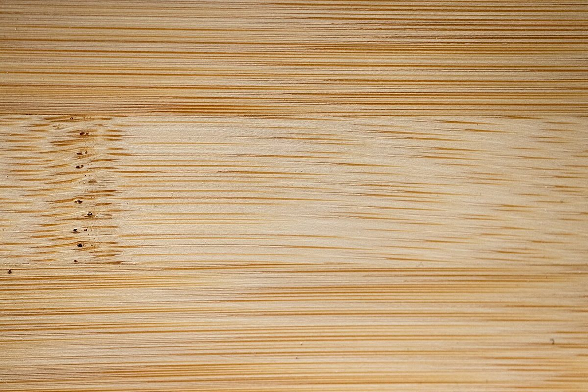

店のこと
店のこと
お店について確認できているのは、所在地とInstagramのアカウントだけです。
このページの「想像してみる」部分は、制作側が想像して書いたものです。お店の実際の様子・考え・メニューとは関係ありません。
確認できていること
- 店名は「房珈琲」、業種はコーヒー専門
- 所在地は愛知県瀬戸市西吉田町29−１６(〒489-0807)
- 電話番号はなし。連絡はInstagramから
- 営業時間・定休日・メニュー・価格・ご予約・駐車場は準備中

トレーB
面(おもて)のならべ
制作側の連想で、お店とは関係ありません。コーヒーそのものではなく、カップの置かれる「面」を思い浮かべて、木・布の質感の写真を一つのトレーにまとめました。



想像してみる
「房」という文字から
由来は分かりません。制作側は、「房」という文字から、小さく仕切られたひとつの部屋のような場所を思い浮かべました(実際のお店の姿ではありません)。そこで、このサイトは仕切りのあるトレーの形にしています。